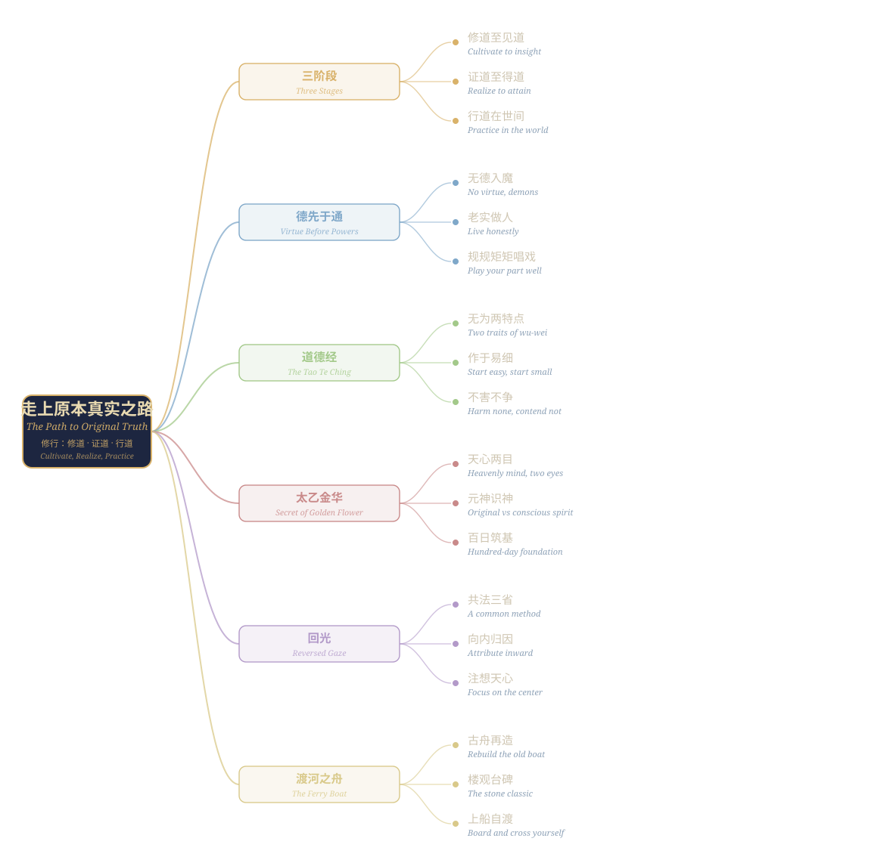

走上原本真实之路
〇 · 书籍信息
基本信息
| 书名 | 《走上原本真实之路》——前作《原本的真实》的路标版：「要想触及、理解和掌握这正道，只靠学习是不可能的，它只有一条路——修行。这是走向原本真实唯一的路」 |
|---|---|
| 作者 | 见君——序言称其「积三十年修行亲身体验」、「用智慧再造了这条渡河之舟」：以老子、吕祖为主线，「以现在流行的外道功法为反面教材」 |
| 结构 | 三部分：第一部分《道德经》八十一章逐章解读（经外闲谈 / 老子其人其道 / 经文与释义）；第二部分 吕祖与《太乙金华宗旨》（天心 / 元神识神 / 回光十讲）；第三部分 附录：周至县楼观台道德经碑 |
| 立场 | 修行三阶段说：「修道至见道为第一阶段；见道后去证道为第二阶段；得道后再于世间去行道为第三阶段」——「正道的修行只是了悟人生和宇宙，其他的均为外道」 |
| 一句话 | 悟了道则老老实实做人去，规规矩矩唱戏去——真得了道的人才真有德性；德未至而言神通，入魔而已。 |
一 · 核心主题总览
这本修行导读里的四组母题：① 修行三阶段
第一章「经外闲谈」立骨架：「修行大致包括三个阶段：修道至见道为第一阶段；见道后去证道为第二阶段；得道后再于世间去行道为第三阶段。所以修行作为统称，它含有修道、证道、行道这三个部分」——古话四难之后还有一句「行道容易教道难」，作者按下不表：「那是当师父的事了」——修行的终点不是自己得道，是把路继续递下去。
② 为什么还要修行
作者先替读者问出心里话：「人活于世，本来就很累很难，干什么还要难上加难的去修行？真的是要长生不老？真的可以得神通而笑傲江湖，游戏人间？」——答案干脆：「正道的修行只是了悟人生和宇宙，其他的均为外道。了悟了道又如何？悟了道则老老实实做人去，规规矩矩唱戏去！因为只有真得了道的人，才真有德性啊」。
③ 老子的道观德观
第一部分用两章铺垫再逐章解读：第二章分讲老子其人、老子的道观、老子的德观；第三章起《道德经》八十一章逐章走——道经之精华、无为的两个特点、无为而治、道的特点和有道之人的规范……直到「天道人道：不害不争」——「为无为，事无事，味无味」「图难于其易，为大于其细」「合抱之木，生于毫末」——被误读两千年的「无为」，被逐章还回本义。
④ 太乙金华与回光
第二部分进入吕祖一脉：吕祖曰：「自然曰道，道无名相，一性而已，一元神而已。性命不可见，寄之天光，天光不可见，寄之两目」——《太乙金华宗旨》十讲从「天心」起：元神识神之分、回光守中、回光调息、回光差谬、回光证验、回光活法、逍遥诀、百日筑基、性光识光——内丹功法被讲成一份可核对的说明书。
二 · 第一段 经外闲谈 —— 三阶段与一条路—— 修道 · 证道 · 行道 ——
修行的三个阶段
第一章把「修行」二字拆开：「也许你会说修行就是修道！其实只对了一半。修是修道，行是行道」——三阶段各有难处：「修道容易见道难，见道容易证道难，证道容易得道难，得道容易行道难」——见、证、得、行四级台阶，每一级淘汰一批人；而修行的前提先立住：「要想触及、理解和掌握这正道，只靠学习是不可能的，它只有一条路——修行。这是走向原本真实唯一的路」——学习能背下所有道理，唯独背不来那条路本身。
◆ 语言学习 · 概念 · 三阶段
| 修道 | 第一阶段：至见道为止——闻思与入门 |
|---|---|
| 证道 | 第二阶段：见道之后的实证 |
| 行道 | 第三阶段：得道后回到世间去做人做事 |
| 教道 | 四难之外的第五难：传给下一代——「当师父的事」 |
句型 ｜ 「修道容易见道难，见道容易证道难，证道容易得道难，得道容易行道难。」——全书的开山古话：四级台阶的淘汰赛：每一级「容易」都是上一级的成果，每一级「难」都是下一级的门票——行道排在最后，因为把道活出来比悟到它更难。
了悟之后去唱戏
作者接着泼冷水也递梯子：「人活于世，本来就很累很难，干什么还要难上加难的去修行？真的是要长生不老？真的可以得神通而笑傲江湖，游戏人间？」——「正道的修行只是了悟人生和宇宙，其他的均为外道」——了悟的报酬朴素得让人意外：「悟了道则老老实实做人去，规规矩矩唱戏去！因为只有真得了道的人，才真有德性啊！要真讲神通么？未悟道没有德那只有入魔！现在的特异功能、『大师』等类统统是这些杂碎，真见道、真有德再来谈神通吧！这才是真神通，是大神通了，不是小术，不是雕虫小技了！」——德先于通，次序不能颠倒。
◆ 语言学习 · 概念 · 德先于通
| 外道 | 了悟人生宇宙之外的目标：长生不老、神通游戏皆属之 |
|---|---|
| 老实做人 | 悟道后的正业：规规矩矩唱戏——把人生演好 |
| 德性 | 真得道的标志：不是能力是品格 |
| 入魔 | 无德而求通的终点：次序颠倒的下场 |
习语 ｜ 「悟了道则老老实实做人去，规规矩矩唱戏去！」——全书最扎心也最治愈的一句：悟道的尽头不是飞升，是回到人间把戏唱好——神通是副产品，德性才是毕业证。
三 · 第二段 老子的道观 —— 无为的辩护—— 论修养 · 八十一章 · 不害不争 ——
为「无为」辩护
第一部分讲老子之前，先处理一个时代情绪：「在中国人的头脑中，一讲修养本就有些问题，本不如讲斗争、上进、『甩开膀子拼命干』来的堂堂正正。可刘少奇竟逆此风，竟敢写了本《论修养》，结果文革给批得一踏糊涂」——「吃小亏三个字并不可怕。古人早就讲『吃亏是福』。但先以吃小亏为饵，后以占大便宜为目的，这就让人觉得太阴了点儿」——作者的立场：老子的无为不是阴谋学：「凡悟道而树德均为正道，这本来就是佛、道、儒的本」——为无为辩护，就是为修养本身正名。
◆ 语言学习 · 概念 · 无为辩护
| 论修养 | 刘少奇的遭际：讲修养在一个时代的风险 |
|---|---|
| 吃亏是福 | 古训的正解：吃亏本身是福——拿它当饵才是阴 |
| 悟道树德 | 正道的标准：悟了道还要长出德来 |
| 佛道儒之本 | 三家共用的底线：不害不争 |
句型 ｜ 「凡悟道而树德均为正道，这本来就是佛、道、儒的本。」——三教归一的极简版：不谈哪家门庭，只认一个标准：悟道之后长没长出德来——德是三家共同的毕业答辩。
八十一章逐章走
第三章「经文与释义」从「道经之精华」起步：「无为的两个特点」「无为而治」「道的特点和有道之人的规范」「道之用」「玄牝之门」「合道之德：无私」「合道之德：若水」——一路讲到「天道人道：不害不争」（第八十一章）——八十一章被拆成一组可检索的关键词表。其中的名章照单全收：「为无为，事无事，味无味。大小多少，报怨以德。图难于其易，为大于其细。天下难事必作于易，天下大事必作于细」；「治大国若烹小鲜」；「其安易持，其未兆易谋……合抱之木，生于毫末；九层之台，起于累土」——附录的楼观台道德经碑，把这些话刻进了石头。
◆ 语言学习 · 概念 · 逐章法
| 道经之精华 | 第一至七章的导读标题：先给甜头 |
|---|---|
| 玄牝之门 | 第六章：道之用的入口意象 |
| 不害不争 | 第八十一章天道人道的收束：全书最后一课 |
| 楼观台碑 | 周至县唐代的石头《道德经》：文字之外的第二文本 |
习语 ｜ 「天下难事必作于易，天下大事必作于细。」——六十三章的当代回声：「为无为」不是躺平，是把难事拆成易事、把大事拆成细事的工程学——无为是方法论，不是态度。
四 · 第三段 吕祖与太乙 —— 回光十讲—— 天心 · 元神 · 两目 ——
天心与一元神
第二部分从吕祖其人讲起，进《太乙金华宗旨》第一章：吕祖曰：「自然曰道，道无名相，一性而已，一元神而已。性命不可见，寄之天光，天光不可见，寄之两目。古来仙真，口口相传，传一得一」——道无名相，只寄在两目之中：内丹功法的全部玄妙，起点是自己的眼睛。净明许祖「特立教外别传之旨，接引上根」，而受法者的门槛被吕祖压到日常：「皆当仰体许祖苦心，必于人伦日用间，立定脚跟，方可修真悟性」——人伦日用之间立定脚跟：修行先尽人事，才有资格谈天心。
◆ 语言学习 · 概念 · 天心
| 天心 | 两眉之间略上：注想之所——医家另有其名 |
|---|---|
| 天光与两目 | 性命不可见，层层寄托：最后落在双目 |
| 教外别传 | 许祖特立之旨：接引上根的直接路径 |
| 人伦日用 | 修行的第一现场：立定脚跟才可谈修真 |
句型 ｜ 「性命不可见，寄之天光，天光不可见，寄之两目。」——内丹功法的认识论：最玄的性命，被一层层寄到最日常的两目——修行不是去找看不见的，是学会看本来就在看的。
元神识神与回光
《太乙》第二讲分人成两半：「道家认为人有元神和识神两种。元神指的是理性的、思维的、有意识的一种精神活动；而识神指的是非理性的、情绪情感的、无意识的一种能力。所谓凝元神，是排除识神的情绪化的干扰，理智地清醒地把意识集中」——凝元神而后「回光运转」，使元神集中在天心，「如此凝神结丹，久久发华」——「这种意识不外驰，逆行内观之法，道教统称『回光』」——回光的适用面极广：「回光是个共法。儒家的『一日三省吾身』、佛家的『心忏』都有回光的意思。自我克制、自我检查其本质都可以算得上回光。相反的是向外之光了，一切错都在人家：领导不好、同事太坏、友邻太懒……统不是回光」——而「回光返照、注想天心」才不是共法，「是道家门中吕祖之法了，也称金丹」。
◆ 语言学习 · 概念 · 回光
| 元神 | 理性的、思维的、有意识的精神活动 |
|---|---|
| 识神 | 非理性的、情绪情感的、无意识的能力 |
| 凝元神 | 排除识神干扰，理智地集中意识 |
| 回光 | 意识不外驰、逆行内观——共法版与金丹版 |
习语 ｜ 「一切错都在人家……统不是回光。」——回光的反义测验：遇事先向外归因，光就撒出去了；省、忏、自察都是把光收回来——内丹的内字，说的是归因方向。
五 · 第四段 行道 —— 渡河之舟—— 德性 · 神通 · 彼岸 ——
真神通的反面清单
序言与第一章合力划线：「要真讲神通么？未悟道没有德那只有入魔！现在的特异功能、『大师』等类统统是这些杂碎」——作者把自己也放进去：「我学问不大，实在无力为老子辩护」，但转念一想：讲修养在一个时代是要冒风险的，「可刘少奇竟逆此风，竟敢写了本《论修养》」——为老子辩护，就是为一切被误读的退让辩护：无为不是输，是另一种赢法。修行的次第被反复敲实：先修道、再见道、后证道、终行道——行道的日常形态就是老老实实做人、规规矩矩唱戏。
◆ 语言学习 · 概念 · 次第
| 杂碎 | 作者对无德「大师」的判词：特异功能表演非修行 |
|---|---|
| 为老子辩护 | 全书的写作动机：给退让正名 |
| 行道日常 | 悟后的生活形态：老实做人规矩唱戏 |
| 另一种赢法 | 无为的再翻译：不争之争 |
句型 ｜ 「真见道、真有德再来谈神通吧！这才是真神通，是大神通了。」——对神通崇拜的釜底抽薪：把次序倒回来：德在前、通在后——通而无德是魔，德而无通是常人，德而后通才是大神通。
渡河之舟
序言给这本书的定位是一艘船：「这舟在古时就有，曾渡过许多人。时至今日，它却是古旧了，古旧得载不动大多数当今的渡河者。见君先生用智慧再造了这条船，它可以载负我们直达彼岸」——「积三十年修行亲身体验，作者捧给我们的是大真大情，是博大的胸怀，是流动着的严肃、幽默和诙谐」——船是旧的（老子与吕祖），船工是新的（白话与幽默）：第三部分的楼观台道德经碑是船的压舱石——从纸上八十一章到石头八十一章：一部经典被两千年间反复重刻，正因为它一直在被重新读懂。
◆ 语言学习 · 概念 · 渡河
| 渡河之舟 | 经典的比喻：古舟旧了，要有人再造 |
|---|---|
| 大真大情 | 序言对作者的鉴定：三十年修行的诚意 |
| 压舱石 | 楼观台碑：石头上的《道德经》 |
| 彼岸 | 修行的方向：不在远方，在行道的日常 |
习语 ｜ 「它可以载负我们直达彼岸。」——序言的最后一句承诺：书即舟、作者即船工——但船不能替你渡河：三阶段的第一级「修道」，还是要自己抬脚上船。
六 · 人物图鉴与成长弧线—— 主角配角 · 一张表看穿 ——
主要人物
见君——再造舟船的船工——积三十年修行体验：把老子和吕祖翻译成当代白话，把外道功法当反面教材
老子——第一部分的主角——其人、其道观、其德观：《道德经》八十一章被逐章还原为「无为的工程学」
吕祖（吕洞宾）——第二部分的主角——《太乙金华宗旨》的传承者：天心、元神识神、回光十讲的源头
刘少奇——当代的镜子——《论修养》的遭际：讲修养的风险史——为老子辩护即为其辩护
次要人物（功能位）
| 慧明 | 上一位主角的回声——《原本的真实》里被六祖一句「先静下来」安顿：修行从静开始的传统延续 |
|---|---|
| 许祖 | 净明派的开创者——「特立教外别传之旨，接引上根」：吕祖法脉的背景板 |
| 序言作者 | 造舟的见证人——「修道容易见道难」五难的引用者：全书的总纲出自此笔 |
| 河上公 | 注释传统的代表——《道德经》历代注家的坐标：本书是这条注疏长链的当代一环 |
七 · 主题与象征—— 每个道具都在说话 ——
| 路 ↔ 修行 | 书名的隐喻——「只靠学习是不可能的，它只有一条路」：知道路名不等于走过路 |
|---|---|
| 舟 ↔ 经典 | 序言的核心比喻——古舟载不动今人：经典要被每一代重新造一遍 |
| 两目 ↔ 天心 | 内丹的落点——性命寄天光、天光寄两目：最玄的功课用最日常的器官做 |
| 唱戏 ↔ 行道 | 悟后的姿态——老老实实做人、规规矩矩唱戏：得道的证明是德性不是神通 |
| 碑 ↔ 压舱石 | 附录的意义——石头上的《道德经》：文字易逝，刻痕长存 |
八 · 写作手法赏析—— 怎么写，就能怎么学 ——
① 三阶段总纲
修道—证道—行道——全书结构即次第：第一部分修与证，第二部分证的实操，行道散在字里行间
② 逐章注释体
八十一章每章「原文 + 释义」——经典解读做成可检索的关键词表：无为、无私、若水各归其章
③ 反面教材法
「外道功法」「特异功能大师」——以当代乱象立靶：修行的边界靠反面案例画清
④ 幽默护法
「严肃、幽默和诙谐」——序言点出的笔性：道俗读物用笑声降低门槛，不降低严肃
⑤ 碑帖收尾
楼观台道德经碑——以石头文本作附录：经典的肉身化，全书落回实物
九 · 名段欣赏—— 原文精读 · 逐段赏析 ——
十 · 金句摘录—— 14 条 · 中英对照 · 带出处 ——
"修道容易见道难，见道容易证道难，证道容易得道难，得道容易行道难。"—— 序言引古语
"修行作为统称，它含有修道、证道、行道这三个部分。"—— 第一章 · 修行的三个阶段
"要想触及、理解和掌握这正道，只靠学习是不可能的，它只有一条路——修行。这是走向原本真实唯一的路。"—— 第一章
"正道的修行只是了悟人生和宇宙，其他的均为外道。"—— 第一章
"悟了道则老老实实做人去，规规矩矩唱戏去！因为只有真得了道的人，才真有德性啊！"—— 第一章
"未悟道没有德那只有入魔！……真见道、真有德再来谈神通吧！这才是真神通，是大神通了。"—— 第一章
"自然曰道，道无名相，一性而已，一元神而已。"—— 第二部分 · 《太乙》第一章（吕祖语）
"性命不可见，寄之天光，天光不可见，寄之两目。"—— 第二部分 · 《太乙》第一章
"皆当仰体许祖苦心，必于人伦日用间，立定脚跟，方可修真悟性。"—— 第二部分 · 《太乙》第一章
"道家认为人有元神和识神两种。元神指的是理性的、思维的、有意识的一种精神活动；而识神指的是非理性的、情绪情感的、无意识的一种能力。"—— 第二部分 · 元神识神
"这种意识不外驰，逆行内观之法，道教统称「回光」。"—— 第二部分
"回光是个共法。儒家的「一日三省吾身」、佛家的「心忏」都有回光的意思。"—— 第二部分
"为无为，事无事，味无味。……图难于其易，为大于其细。天下难事必作于易，天下大事必作于细。"—— 第一部分 · 《道德经》第六十三章
"合抱之木，生于毫末；九层之台，起于累土。"—— 第一部分 · 《道德经》第六十四章
十一 · 拓展阅读—— 原文 · 词条 · 译文 ——
十二 · 个人感悟与心得—— 三点心得 ——
三点感悟
① 把「修行」拆成三段来走
三阶段说的实践价值：修道、证道、行道各有各的难——卡在哪一段就补哪一段的课：混为一谈的人，往往在第一段就预支了第三段的成就感。
② 归因方向就是修行方向
回光的启示：三省吾身、心忏、回光共用的动作是把光收回来——遇事先向外归因的人，光永远撒在外面：内与外，一念之间。
③ 德是通的安全阀
德先于通的推论：任何能力都是通：才华、财富、影响力——无德之通是魔，有德之通是大神通：次序比能力重要。
这本《走上原本真实之路》最厚道的地方，是它不承诺捷径：四难古话摆在前头，渡河之舟停在岸边——路只有一条，走还得自己走；但走的人不孤单，两千年来每一代造船人都在船边等着说：上船吧，这条路我们走过。
十三 · 一页速查（复习用）
| 三阶段 | 修道、证道、行道：四级台阶的淘汰赛 |
|---|---|
| 德先于通 | 无德求通只有入魔：次序即安全 |
| 道德经新解 | 无为是工程学：难事作于易、大事作于细 |
| 回光 | 向内归因的共法：三省吾身与心忏同源 |
| 渡河之舟 | 经典要每代重造：石头上的八十一章 |
十四 · 全书思维导图—— 一图纵览 ——

一图纵览全书骨架 · 中英双语对照 · 手机端可左右滑动查看全图